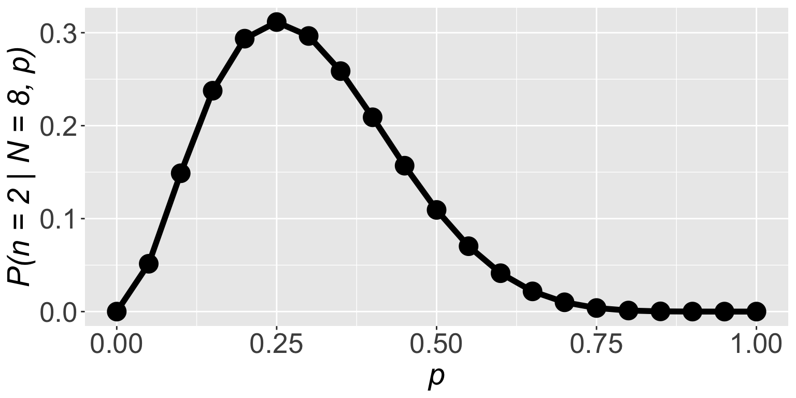
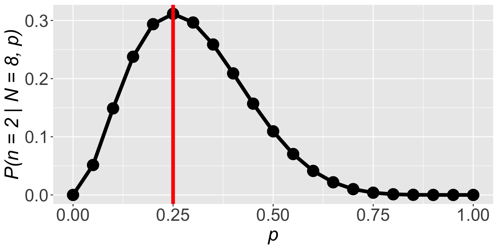
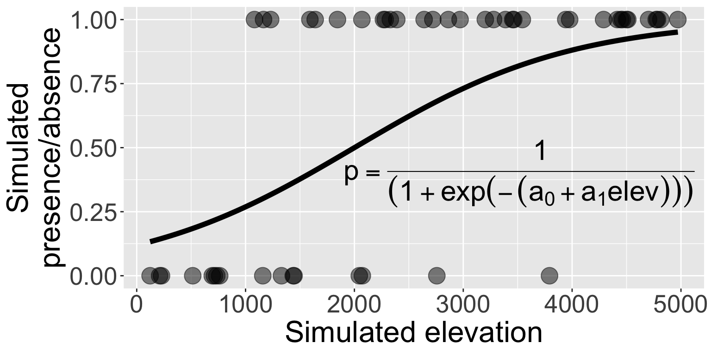
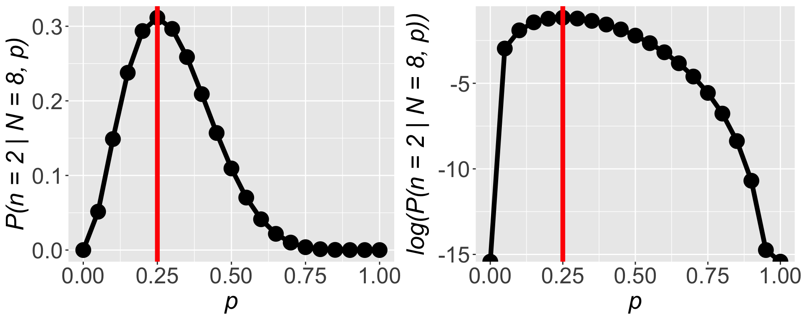
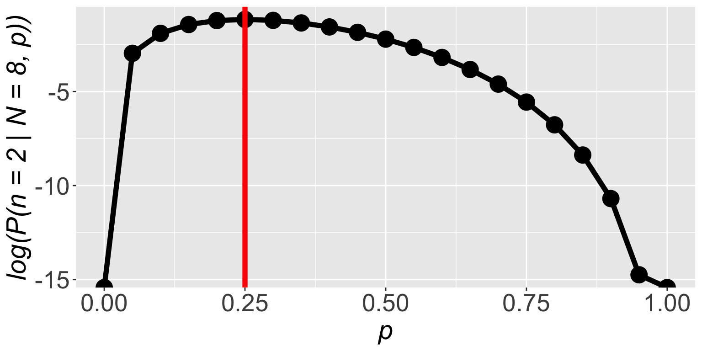
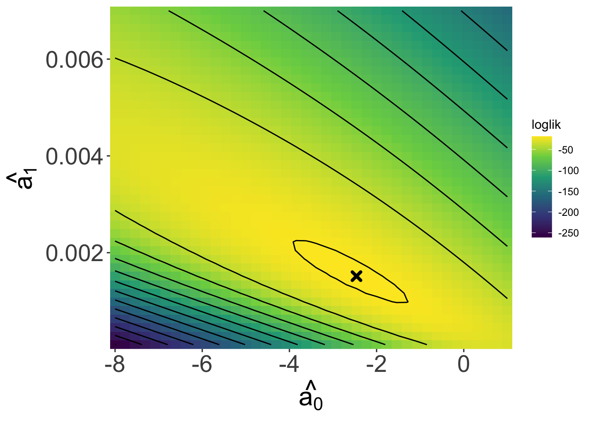

[1] 0 0 1 0 1 0 0 0Introducing likelihood
Figuring out probability of success from data
Suppose we go looking for kāhuli

And out of 8 visits we find them 2 times
This is a binomial situation with 8 trials, but what is \(p\)?
Figuring out probability of success from data
This is a binomial situation with 8 trials, but what is \(p\)?
Let’s ask ourselves: what’s the probability of these data given different values of \(p\)? For example, \(\mathbb{P}(n = 2 \mid N = 8, p = 0.9)\):
Figuring out probability of success from data
This is a binomial situation with 8 trials, but what is \(p\)?
Find the value of \(p\) for which \(\mathbb{P}(n = 2 \mid N = 8, p)\) is highest, that is a good guess for the value of \(p\)
Figuring out probability of success from data
Find the value of \(p\) for which \(\mathbb{P}(n = 2 \mid N = 8, p)\) is highest, that is a good guess for the value of \(p\)
[1] 0.000000e+00 5.145643e-02 1.488035e-01 2.376042e-01 2.936013e-01
[6] 3.114624e-01 2.964755e-01 2.586868e-01 2.090189e-01 1.569492e-01
[11] 1.093750e-01 7.033289e-02 4.128768e-02 2.174668e-02 1.000188e-02
[16] 3.845215e-03 1.146880e-03 2.304323e-04 2.268000e-05 3.948437e-07
[21] 0.000000e+00Figuring out probability of success from data
Find the value of \(p\) for which \(\mathbb{P}(n = 2 \mid N = 8, p)\) is highest, that is a good guess for the value of \(p\)

Figuring out probability of success from data
\(\mathbb{P}(n = 2 \mid N = 8, p)\) is highest when \(p = 0.25\)

Interesting!
We learned probability is also frequency
The frequency of successes was \(\frac{2}{8} = 0.25\)
Figuring out probability of success from data
\(\mathbb{P}(n = 2 \mid N = 8, p)\) is highest when \(p = 0.25\)

So we figured out a fancy way of finding \(p = \frac{2}{8} = 0.25\)
But this matters because frequency in more complex data will not be so clear cut
Figuring out probability of success from data
What we figured out is in fact the likelihood function
\(\mathbb{P}(\text{data} \mid \text{parameters})\)

And that maximizing it gives us a good estimate of the parameters
Maximum likelihood estimation (MLE): presence/absence
Let’s return to the simulated presence/absence data
\[ \begin{aligned} \mathbb{P}(\text{presence}) &\sim Binom(N = 1, ~p) \\ p &= \frac{1}{1 + e^{-(-2 + 0.001 \times (\text{elevation}))}} \end{aligned} \]
Maximum likelihood estimation (MLE): presence/absence
Let’s return to the simulated presence/absence data

Can we use MLE to find the values of \(\hat{a_0}\) and \(\hat{a_1}\) and will they close to the true values of \(a_0 = -2\) and \(a_1 = 0.001\)?
Maximum likelihood estimation (MLE): presence/absence
Can we use MLE to find the values of \(\hat{a_0}\) and \(\hat{a_1}\)?
We need dbinom. But what should size be and prob be?
Maximum likelihood estimation (MLE): presence/absence
Can we use MLE to find the values of \(\hat{a_0}\) and \(\hat{a_1}\)?
We need dbinom. But what should size be and prob be?
\[ \begin{aligned} \mathbb{P}(y \mid N = 1, ~p = f(x)) = ~&\mathbb{P}(y_1 \mid N = 1, ~p_1 = f(x_1)) \times \\ &\mathbb{P}(y_2 \mid N = 1, ~p_2 = f(x_2)) \times \cdots \times \\ &\mathbb{P}(y_n \mid N = 1, ~p_n = f(x_n)) \\ = ~&\prod_{i = 1}^n \mathbb{P}(y_i \mid N = 1, ~p_i = f(x_i)) \end{aligned} \]
Maximum likelihood estimation (MLE): presence/absence
Can we use MLE to find the values of \(\hat{a_0}\) and \(\hat{a_1}\)?
We need dbinom. But what should size be and prob be?
\[ \mathbb{P}(y \mid N = 1, ~p = f(x)) = \prod_{i = 1}^n \mathbb{P}(y_i \mid N = 1, ~p_i = f(x_i)) \]
Maximum likelihood estimation (MLE): presence/absence
\[ \mathbb{P}(y \mid N = 1, ~p = f(x)) = \prod_{i = 1}^n \mathbb{P}(y_i \mid N = 1, ~p_i = f(x_i)) \]
Sweet! What is the value of the likelihood function?
…oh no
Maximum likelihood estimation (MLE): presence/absence
\[ \mathbb{P}(y \mid N = 1, ~p = f(x)) = \prod_{i = 1}^n \mathbb{P}(y_i \mid N = 1, ~p_i = f(x_i)) \]
The issue: multiplying many numbers less than 1 \(\Rightarrow\) very small number that our computer can’t deal with.
Not to worry! Math to the rescue!
Maximum likelihood estimation (MLE): presence/absence
\[ \mathbb{P}(y \mid N = 1, ~p = f(x)) = \prod_{i = 1}^n \mathbb{P}(y_i \mid N = 1, ~p_i = f(x_i)) \]
\[ \begin{aligned} \Rightarrow \log (\mathbb{P}(y &\mid N = 1, ~p = f(x)) ) \\ &= \log \left(\prod_{i = 1}^n \mathbb{P}(y_i \mid N = 1, ~p_i = f(x_i)) \right) \\ &= \sum_{i = 1}^n\log \left(\mathbb{P}(y_i \mid N = 1, ~p_i = f(x_i)) \right) \end{aligned} \]
Maximum likelihood estimation (MLE): presence/absence
\[ \begin{aligned} \log (\mathbb{P}(y &\mid N = 1, ~p = f(x)) ) \\ &= \sum_{i = 1}^n\log \left(\mathbb{P}(y_i \mid N = 1, ~p_i = f(x_i)) \right) \end{aligned} \]
Logging both sides turns multiplication into addition
Maximum likelihood estimation (MLE): presence/absence
Logging both sides turns multiplication into addition and doesn’t change our parameter estimates

Maximum likelihood estimation (MLE): presence/absence
So we always work with the log likelihood function

Maximum likelihood estimation (MLE): presence/absence
Now we return to find the values of \(\hat{a_0}\) and \(\hat{a_1}\)
[1] -86.81176That is a number we can work with!
Maximum likelihood estimation (MLE): presence/absence
Looking over a range of \(\hat{a_0}\) and \(\hat{a_1}\) values we see a maximum!

And our estimates
\(\hat{a_0}\) = -2.4615385
\(\hat{a_1}\) = 0.0015154
Are close to the true values
\(a_0 = -2\)
\(a_1 = 0.001\)
Maximum likelihood estimation (MLE): presence/absence
How do we really find the maximum of the likelihood function?

And our estimates
\(\hat{a_0}\) = -2.4615385
\(\hat{a_1}\) = 0.0015154
Are close to the true values
\(a_0 = -2\)
\(a_1 = 0.001\)
Maximizing the likelihood function
One approach is to use an algorithm to find the maximum
Maximizing the likelihood function
Where do we get the llfun function?
We have to make it
Maximizing the likelihood function
The output of optim is a list, each element is accessed with $
Maximum likelihood estimation (MLE): presence/absence
How do we really find the maximum of the likelihood function?
Another approach is using math to maximize the log likelihood function
Where the derivative is 0, that’s the maximum
\(\frac{d}{d \text{params}} \log \mathbb{P}(\text{data} \mid \text{params}) = 0\)
Turns out this is solvable only in some cases like when data come from a normal distribution
Interpreting likelihood
- \(\log\mathscr{L} = \sum\log\mathbb{P}(\text{data} \mid \text{parameters})\) depends on the data being independent and identically distributed
- the likelihood function is not a probability density function
- in fact the values of the (log) likelihood function are random variables
Interpreting likelihood
- The estimate we get from maximizing the (log) likelihood function has good statistical properties
- consistent: will converge on correct answer as sample size \(\rightarrow \infty\)
- least variance: of consistent estimators it has the smallest variance